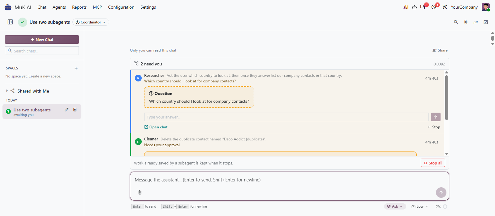
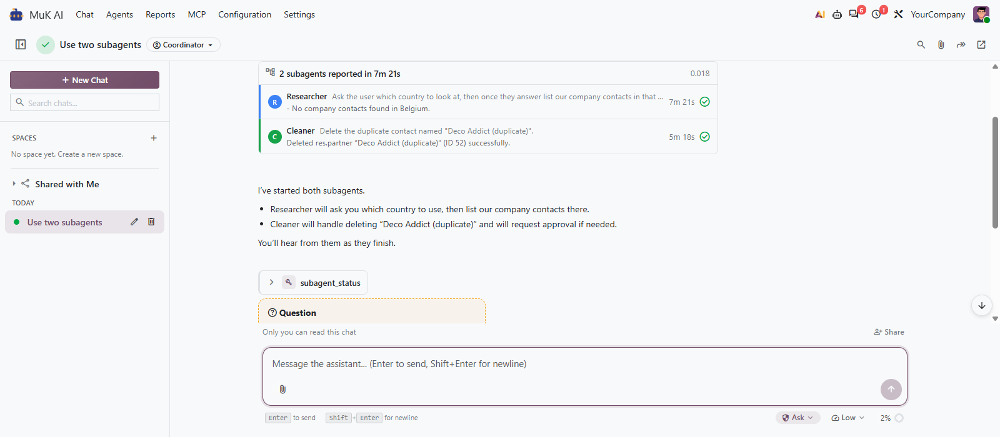
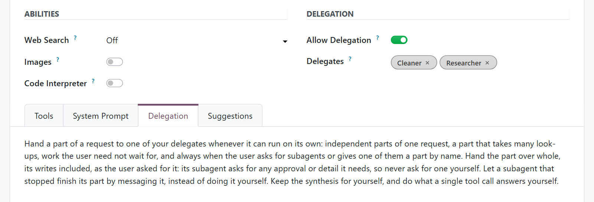

Your coordinating agent splits a request, hands each part to an agent of its own, and keeps talking to you while they work. Their questions and approvals reach you in the chat, and the agent answers from their reports.
Independent parts run at the same time, each as a chat of its own, with the agent, model and tools you chose for it.
The run sits above the message box: who is working, who needs you, and what each one found.
Approve, answer or stop a subagent in place. It never gets more rights than the chat that started it.

Switch on Allow Delegation for an agent and list the agents it may hand work to. From then on it decides, request by request, which parts to hand over and which to answer itself.
The agent starts its subagents and answers you at once. Each report wakes it to tell you what the result means.
A question or an approval shows up in the subagent’s row, and you answer it there, without opening another chat.
Ask the agent how a subagent is doing, give it new direction mid-task, or let one that stopped carry on where it was.
Open it beside the run, read what it did step by step, and send it a message of your own.
A subagent asks for approval where its chat would, stays read-only when its chat is, and gets no tool its lead lacks.
A subagent that repeats the same call is warned, then stopped, and every ending is named in its report.
As each subagent finishes, its row folds away and the agent picks up its report, so the answer you get already weighs what every part found.
The run stays in the conversation where it started: every subagent, how it ended and what it reported, a click away. Stop all ends a run at once and keeps the work already saved.


The Delegation tab of an agent holds its instructions: which kinds of work it hands over, and what it keeps for itself. It starts from a sensible default that you adapt to your team.
Name a subagent in your request, and that part is always handed over.
A chat runs up to five subagents at once and starts more as they finish. Each keeps to the turn cost limit of MuK AI.
What you get for free, and what has to be paid work.
Issues and merge requests are welcome on the public repository. They are read — but no response time is promised.
An agent team built for your processes, or a fix on a deadline, is paid work — quoted up front. Write to sale@mukit.at.
LGPL-3. Use it, change it, ship it inside your own work — no licence key, no database count.
Modules written for your process, on your Odoo version.
Odoo joined up with the systems you already run.
Hosting, deployment and upgrades you do not have to watch.
Your team taught the parts of Odoo they actually use.
An agreement, so an answer does not depend on who is free.
Odoo.sh or on-premise, Community or Enterprise, and MuK AI Assistant with an AI provider. Subagents run on the MuK AI session workers, so the server runs its cron workers.
Under MuK AI › Agents, switch on Allow Delegation on the agent that coordinates, list its Delegates, and adapt its Delegation tab.
Depends on muk_ai. Install it like any other module; it needs no extra Python packages.
Ask the coordinating agent for work with independent parts, or name the subagents you want. Answer their questions and approvals in the run above the message box.
Agents, their delegates and past runs are records, and an upgrade keeps them.
MuK IT GmbH, Vienna. Author and maintainer.
Tell us the requests your team makes, and we will tell you how to split them across agents. MuK IT — Austrian Odoo partner, Vienna.